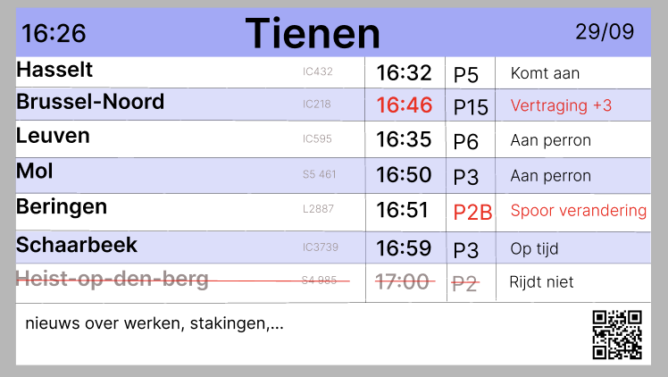
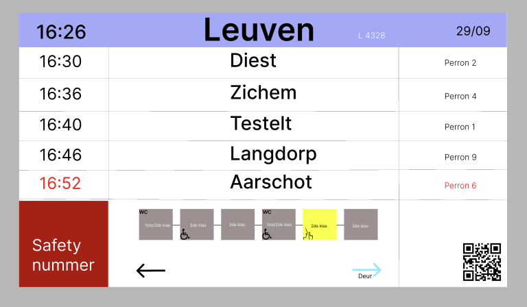

Ik heb de trein en info ingevuld en de juiste kleur gegeven.
Status ingevuld en rood als een verandering plaatsvindt.
Uur van aankomen en rood in geval van vertraging.
Info in het grijs als trein afgeschaft is.
In de algemene balk heb ik het perron en station onder elkaar gezet voor een beteroverzicht.
Heb om een beter overzicht te krijgen bij de treinen een zebra systeem met dezelfde paarse kleur als algemene balk maar met 38% opacity.

Alle info er ingezet.
De paarse lichte balk voor zebra overzicht te creeëren.
De QR-code erin geplaatst.
De rode en grijze kleuren toegevoegd waar nodig.
Heb het uur van aankomst en perron van plaats gewisseld omdat het mij praktischer leek.

Heb alle info ingevuld.
Rood waar nodig voor vertraging/ verandering van spoor.
De QR-code toegevoegd.
De wagon iconen erbij gezet, de wagons een donker kleur gegeven, de 1ste en 2de klas heb ik in de wagon gezet.
De deur kant heb ik in het blauw gezet omdat het nuttige info is maar niet noodzakelijk.
Bij safety nummer ben ik nog niet helemaal zeker hoe ik dat ga doen.